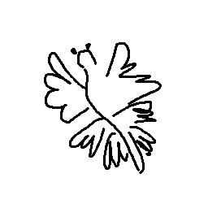
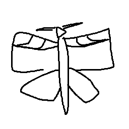
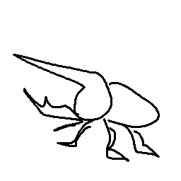

Nesse mundo, somos abençoados com espíritos bondosos chamados de Pomokais, que são ótimos companheiros do
nosso
dia a dia.
Nossa energia é sua principal fonte de alimento, então eles podem crescer à medida que você estuda!
Esses são chamados de ESPÍRITOS DE ESTUDO. Eles refletem a forma como você vê o mundo através do conhecimento:

Espírito majestoso com aparência similar à de uma lesma do mar. Apresenta vasta curiosidade em explorar e adora que seus treinadores estudem coisas novas!

Aparecia parecida com a mariposa-falcão. São extremamente ágeis e curiosos, procurando treinadores que gostem de se aprofundar e testar conhecimentos.

Espíritos atentos e observadores. Gostam de prestar atenção nos arredores e são ótimos para treinadores que planejam todos os detalhes.